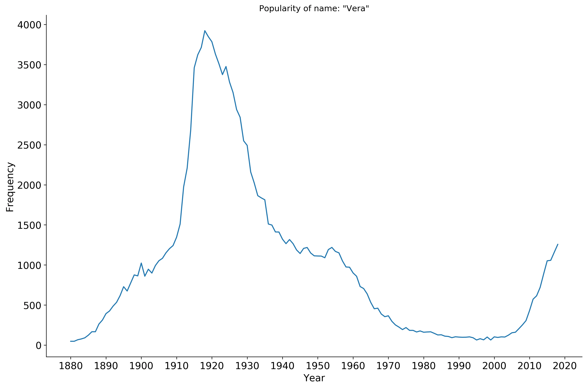
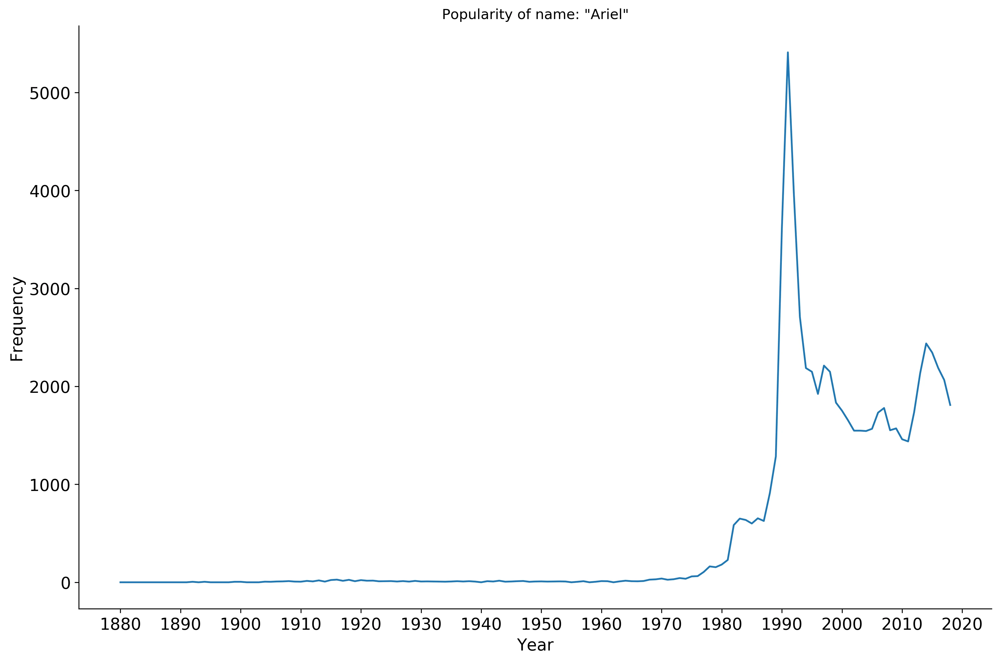
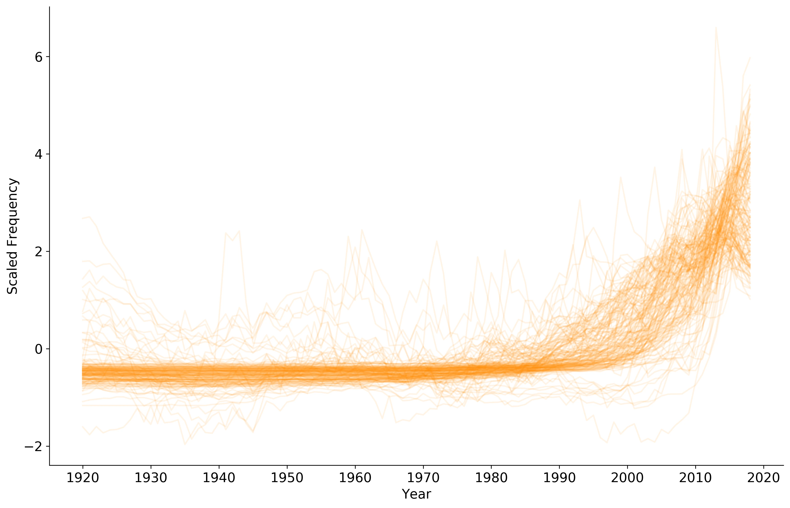
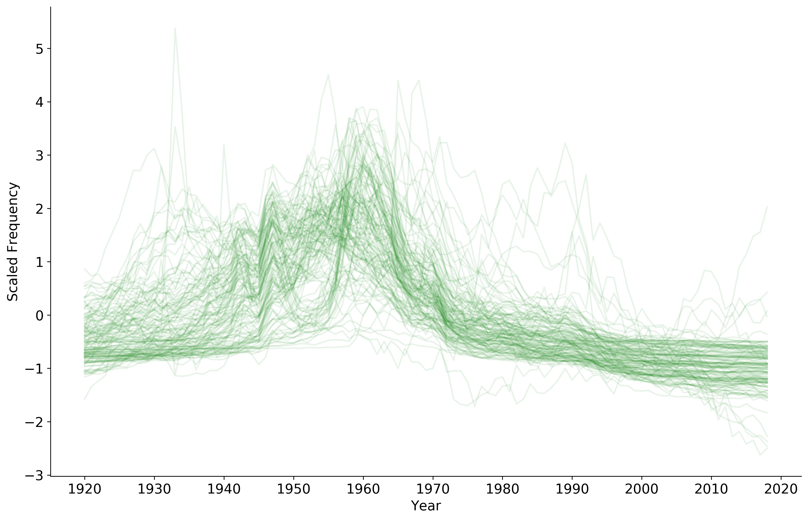
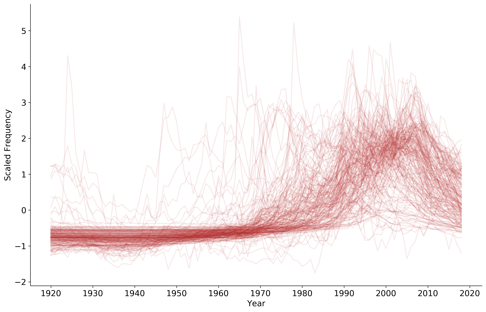
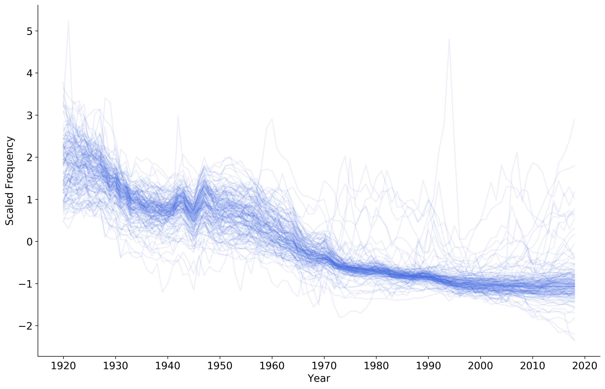
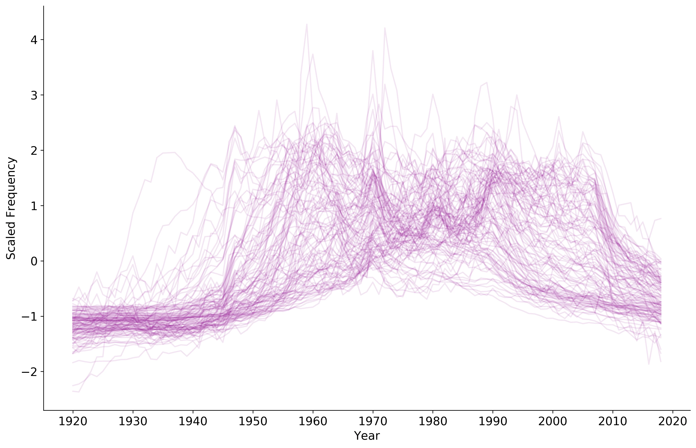
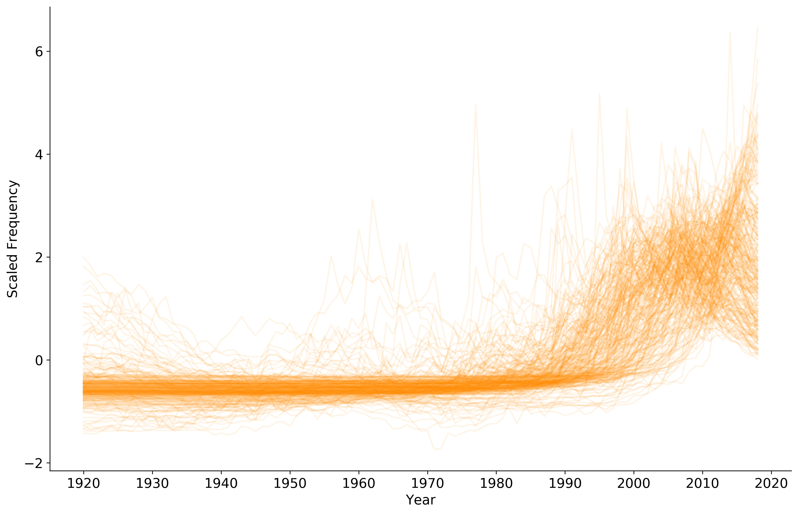
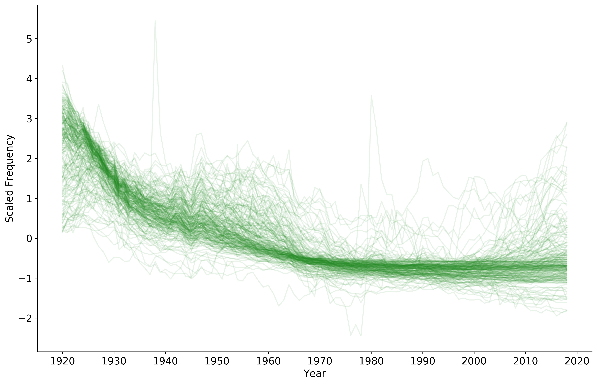
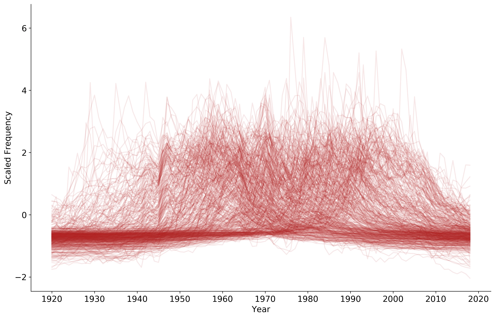

written by Roni Kobrosly on 2019-07-19 | tags: machine learning human data
Quick caveat: In this analysis I used government data that assumed binary biological sex. That's why I only use terms like "boy" and "girl".
Another note: If you're reading this and curious about a name, shoot me an email and I'll make a plot for you 🐣
I’m in my mid-thirties and as many of my friends are starting to make their own families, I'm having to learn lots of baby names. I’ve heard lots of people say that “older” names are becoming popular and in hearing these baby names I feel like there is something to this.
One of my good friends has a sweet, one-year old baby named Vera. It’s a beautiful, old-fashioned name for sure, but is it becoming popular again?

After plotting some data from the Social Security Administration, it does look to be making a comeback. Funny aside: It turns out the name Ariel spiked in popularity after Disney's 1989 release of The Little Mermaid).

This made me wonder more generally about names and their trends. Are there complicated dynamics at play with the popularity of names, or does their popularity come and go in waves, or do most names peak in popularity for a bit and fade into history? I recently attended SciPy 2019 and attended a great session on time series clustering. This question seemed like a great problem to try out some of the methods I had learned there, such as the concept of dynamic time warping (DTW).
I ran an analysis and found the following:
Here are the name trend clusters I was able to pull out. Click on the links below to see the full plots for each (each line in a plot represents a unique name's popularity over time). I also shared a few exemplars for each (names with the closest DTW distance to the center of their cluster). Note: to simplify things I excluded names if there were less than 10,000 instances of them in the last 100 years. See this notebook for more details on the analysis.
Cluster #1: Not popular before but exploding in popularity over the last decade (e.g. Owen, Cruz, Carter)

Cluster #2: A sharp peak in the mid-20th century but that’s it (e.g. Dale, Roger, Tony)

Cluster #3: Peaked in the late 90s / early aughts but dying out (e.g. Jacob, Trenton, Brennan)

Cluster #4: Very old names that have died out (e.g. Archie, Walter, Louis)

Cluster #5: Popular towards the end of the 20th century but dying out (e.g. Timothy, Brian, Eric)

Cluster #1: Super popular the last two decades but mostly dropping off (e.g. Arianna, Sophia, Makenzie)

Cluster #2: Old-timey names that have died out (e.g. Flora, Maxine, Lillie)

Cluster #3: Wildcards / difficult to cluster! (e.g. Melissa, Amy, Erin)
